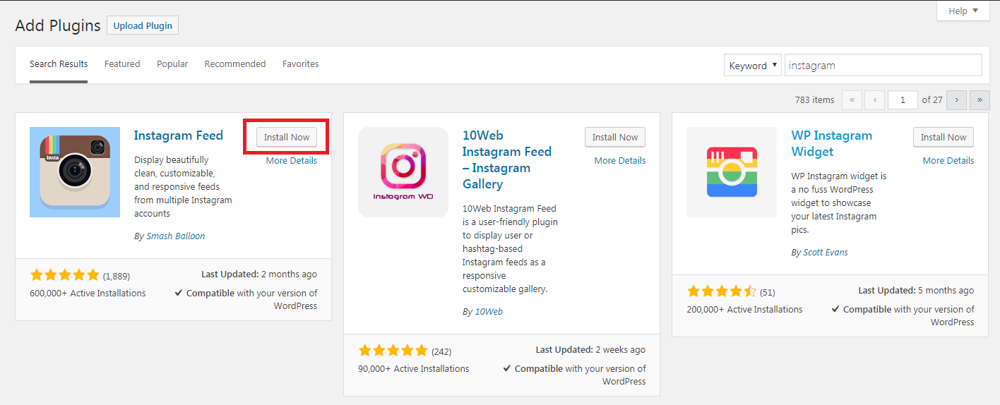
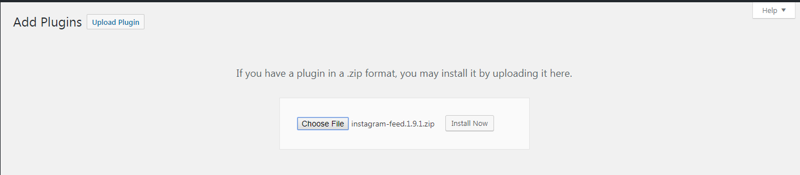
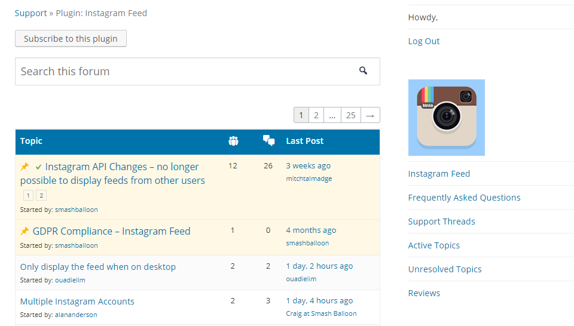

Choosing and Installing Plugins
Objectives
- Identify the purpose of a plugin
- Assess a plugin based on the evaluation criteria
- Demonstrate how to install plugins automatically from the WordPress Plugin Directory or from a provided zip file and activate the plugins
- Demonstrate how to leave a star rating and review for a plugin
- Demonstrate how to search for and create a new topic in the plugin support forum
Prerequisite Skills
- Basic WordPress Administration
Readiness Questions
- Do you have a WordPress site?
- Do you want to add functionality to your WordPress website?
- Do you have a WordPress.org account?
- Is there something special you would like to do with your WordPress website?
What is a Plugin?
Plugins are ways to extend and add to the functionality that already exists in WordPress. The core of WordPress is designed to be lean and lightweight, to maximize flexibility and minimize code bloat. Plugins offer custom functions and features so that each user can tailor their site to their specific needs.
Example types of Plugins
- SEO
- Backup
- Security
- Sliders and Galleries
- Bulletin Board Forum/Social Network
- API Plugins (Twitter, Instagram, Flickr, etc.)
- Tutorials
Default Plugins - Akismet
An anti-spam plugin by Automattic.
Activating Akismet
- Go to Plugins from the Dashboard menu.
- Locate Akismet, and click on the Activate button below the name.
- Follow the prompts to activate your Akismet account.
- Once activated with your Akismet key, your blog will be protected from spam comments.
Default Plugins - Hello Dolly
A very simple plugin showing a lyric from Hello, Dolly by Louis Armstrong.
Activating Hello Dolly
- Go to Plugins from the Dashboard menu.
- Locate Hello Dolly, and click on the Activate button below the name.
- Once activated, you will see a lyric from the song at the top right hand corner of the screen.
Where to Find Plugins?
The WordPress Plugin Directory on Wordpress.org is the best and safest place to get free plugins.
All plugins have been reviewed and approved per the plugin guidelines as outlined in Writing a Plugin.
Where to Find Plugins?

Evaluating Plugins
- Star Rating
- Last Updated
- Number of Downloads
- Compatibility Rating
- Author Information & other plugins
- Support Forums
Evaluating Plugins

Installing Plugins
Remember to backup your site
Installing Plugins from WordPress Plugin Directory
- Go to Plugins > Add New on the Dashboard menu.
- Search for the plugin name or type, or browse one of the categories or tags.
- Review the standard information: last updated, number of downloads, compatibility, etc.
- If you decide to install the plugin, click the Install button.
- After installing a plugin, it must be activated, click the Activate button.
Installing Plugins from WordPress Plugin Directory

Installing Plugins via External Zip File
- Download the plugin as a .zip file and save to your computer.
- Go to Plugins > Add New on the Dashboard menu.
- Click on blue Upload Plugin button at the top of the page.
- Click the Choose File button and browse to the desktop and select the .zip file.
- Click the Install Now button, then click on the Activate button.
Installing Plugins via External Zip File

Providing Feedback, Reviews, and Ratings
The best way to improve and help plugin authors make better plugins is to provide feedback by leaving a review and a star rating.
Providing Feedback, Reviews, and Ratings

Providing Feedback, Reviews, and Ratings
Leaving a Review and a Star Rating
- Go to the Plugin Directory located at https://wordpress.org/plugins/.
- Search for the plugin name that you would like to leave feedback for or get help with.
- Locate on the right side where it says, Ratings and click on Add my review button below.
- Fill up the review form and submit.
Getting Help in the WordPress.org Plugin Support Forums
Each plugin in the WordPress Plugin Directory has a support forum to ask questions about using or configuring the plugin.
Getting Help in the WordPress.org Plugin Support Forums

Providing Feedback, Reviews, and Ratings
Leaving a Review and a Star Rating
- Go to the plugin page at the Plugin Directory.
- Click on the green View support forum button on the right side of the plugin listing or the Support tab to visit the plugin support forum.
- Search the forum for similar or relevant topics.
- Post a new topic and wait for response.
Exercise 1: Activate Hello Dolly
Practice activating Hello Dolly.
- Locate Hello Dolly on the Plugin screen
- Activate the plugin
- Refresh admin screen and locate the lyric
Exercise 2: Activate Akismet
Practice activating Akismet and configuring the plugin.
- Locate Akismet on the Plugin screen
- Activate the plugin
- Setup Akismet account and configure Akismet key
Exercise 3: Install a plugin from Plugin Directory
Practice installing a plugin from Plugin directory.
- Go to Add Plugins screen
- Search for a plugin
- Install and activate the plugin
Exercise 4: Install Instagram Feed Plugin
Practice installing a plugin from a .zip file.
- Go to Add Plugins screen
- Upload Instagram Feed plugin using the Upload Plugin button
- Install and activate the plugin
- Configure plugin to connect to an Instagram account
Exercise 5: Mark and View Favorite Plugin
Practice adding a plugin to favorite.
- Go to Plugin Directory and choose a plugin
- Favorite the plugin
- View the favorited plugin at the Add Plugins screen
Exercise 6: Leave a rating and review
Practice leaving a star rating and review for a plugin.
- Go to Plugin Directory and choose a plugin
- Create a new review for the chosen plugin